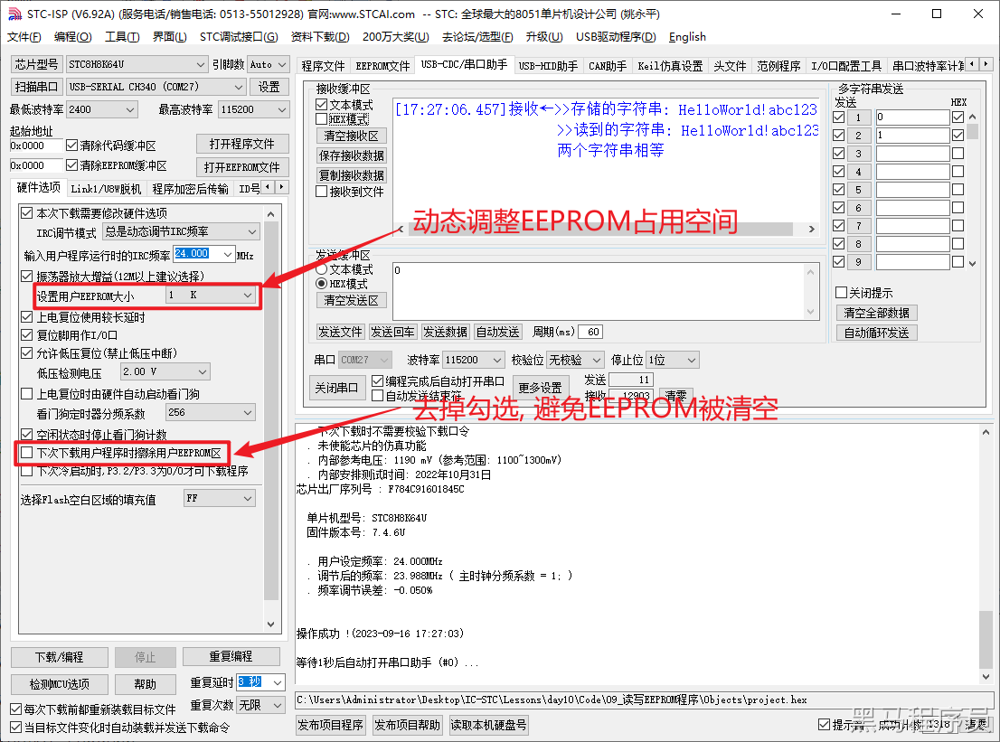

<!DOCTYPE lake>
<p data-lake-id="u03377ca5" id="u03377ca5"><span data-lake-id="u48e40fcf" id="u48e40fcf">EEPROM是一种可擦写可编程只读存储器（Electrically Erasable Programmable Read-Only Memory）的缩写。它是一种非易失性存储器，可以在不需要外部电源的情况下保持存储数据。与ROM不同，EEPROM可以通过电子擦除和编程来修改存储的数据，因此它是一种可重写的存储器。</span></p><p data-lake-id="u0fedc91b" id="u0fedc91b"><span data-lake-id="u452d584d" id="u452d584d">​</span><br/></p><p data-lake-id="u6bd23fc2" id="u6bd23fc2"><span data-lake-id="ud9da1065" id="ud9da1065">EEPROM通常用于存储需要频繁修改的数据，例如系统配置信息、用户设置、校准数据等。由于EEPROM可以在系统运行时进行读写操作，因此它在许多应用中都具有很高的实用价值。</span></p><p data-lake-id="u87c717c1" id="u87c717c1"><span data-lake-id="u9d03bd78" id="u9d03bd78">​</span><br/></p><h2 data-lake-id="XUcNF" id="XUcNF"><span data-lake-id="uafbbb6a7" id="uafbbb6a7">设置EEPROM</span></h2><p data-lake-id="u6e848f7a" id="u6e848f7a"><span data-lake-id="u9d172db4" id="u9d172db4">STC8H8K64U的EEPROM可以在烧录的时候指定大小, 如下图</span></p><p data-lake-id="u7a8c9f8c" id="u7a8c9f8c"></p><p data-lake-id="u8242c2e3" id="u8242c2e3"><span data-lake-id="u8849d4be" id="u8849d4be">​</span><br/></p><h2 data-lake-id="quLKC" id="quLKC"><span data-lake-id="u28bec7a6" id="u28bec7a6">读写String字符串</span></h2><span class="yuque-card-unsupported">[codeblock]</span><h2 data-lake-id="MQzqI" id="MQzqI"><span data-lake-id="ub388f6f1" id="ub388f6f1">官方示例</span></h2><p data-lake-id="u4dbcae94" id="u4dbcae94"><span data-lake-id="u4dd6ed6e" id="u4dd6ed6e">串口命令设置: (命令字母不区分大小写)</span></p><ul list="u7af34051"><li data-lake-id="u157eba18" fid="u187402e8" id="u157eba18"><span data-lake-id="u98eb8865" id="u98eb8865"> </span><code data-lake-id="u242c7de8" id="u242c7de8"><span data-lake-id="ud78f33d4" id="ud78f33d4">E 0x0040</span></code><span data-lake-id="uf376511e" id="uf376511e">             		--&gt; 对0x0040地址扇区内容进行擦除.</span></li><li data-lake-id="uff0f18a1" fid="u187402e8" id="uff0f18a1"><span data-lake-id="ufaf005d7" id="ufaf005d7"> </span><code data-lake-id="u707831b7" id="u707831b7"><span data-lake-id="u454f14c9" id="u454f14c9">W 0x0040 1234567890</span></code><span data-lake-id="u9abf0125" id="u9abf0125"> 	--&gt; 对0x0040地址写入字符1234567890.</span></li><li data-lake-id="u407ed775" fid="u187402e8" id="u407ed775"><span data-lake-id="u2fe46fd2" id="u2fe46fd2"> </span><code data-lake-id="ue48bb614" id="ue48bb614"><span data-lake-id="u9386bb4d" id="u9386bb4d">R 0x0040 10</span></code><span data-lake-id="uc641a952" id="uc641a952">          		--&gt; 对0x0040地址读出10个字节数据.</span></li></ul><span class="yuque-card-unsupported">[codeblock]</span><h2 data-lake-id="ZUSvr" id="ZUSvr"><span data-lake-id="ucd242048" id="ucd242048">练习题</span></h2><ul list="u92657c93"><li data-lake-id="udfc68375" fid="u6a90383b" id="udfc68375"><span data-lake-id="u9ff1d7d7" id="u9ff1d7d7">实现2字节int数据写读</span></li><li data-lake-id="uf1886506" fid="u6a90383b" id="uf1886506"><span data-lake-id="u2f6cbbfd" id="u2f6cbbfd">实现4字节long数据写读</span></li><li data-lake-id="u0bac504e" fid="u6a90383b" id="u0bac504e"><span data-lake-id="u6ae143ee" id="u6ae143ee">实现4字节float数据写读</span></li><li data-lake-id="u5f3555d8" fid="u6a90383b" id="u5f3555d8"><span data-lake-id="ueab0200a" id="ueab0200a">实现struct结构体数据写读</span></li></ul><span class="yuque-card-unsupported">[codeblock]</span>